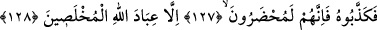

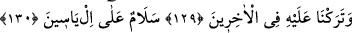
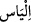
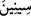
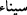
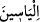
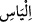
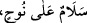
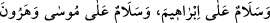
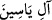
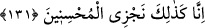
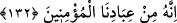
127, 128. Bunun üzerine İlyas’ı yalanladılar. Onun için Allah’ın ihlâslı kulları
müstesna; onların hepsi (cehenneme) götürüleceklerdir.
“Bunun üzerine İlyas’ı yalanladılar. Onun için Allah’ın ihlâslı kulları müstesna;”
onu tekzip etmeleri sebebiyle “onların hepsi (cehenneme)” ve cehennem azabına
“götürüleceklerdir.” Cehennemden uzaklaşamazlar, azapları hafifletilmez ve Allah
Teâlâ’nın buyurduğu gibi “Onlar oradan çıkarılacak da değillerdir” (el-Hicr 15/48).
Zira mutlak ihzar (hazır etme, götürülme) örfte olumsuz mânâda kullanılır. Bu kavl-i
ilâhî şuna delâlet eder: İlyas (a.s.)’ın kavminden kendisini tekzip etmeyen ve azapta
hazır olmayanların Allah Teâlâ’nın kendilerini imana ve irşadın gerekleriyle amel
etmeye muvaffak kıldığı ihlaslı ve samimi kullardır.
129, 130. Sonra gelenler içinde, kendisine bir ün bıraktık, «İlyas’a selâm!» dedik.
İşte ümmetler aynen bu selâm sözüyle kıyamete kadar ona dua eder ve onu övgüyle
yâd ederler. “__WORD__ kelimesi, lügatte “__WORD__ kelimesinden gelir. Tur Dağı anlamına
gelen “__WORD__ kelimesinin “__WORD__ kelimesinden geldiği gibi. Her iki kelimede de “__WORD__” (ya
ve nun) ziyade edilmiştir. Dolayısıyla “__WORD__ kelimesi “__WORD__ kelimesinin çoğulu
değildir. Yukarıda geçen “
” sözleri de
buna delâlet eder. Bu kelime “__WORD__ diye izafetle de okunur. Zira Kur’an hattında da
kelime bu şekilde yani ayrı olarak yazılır. Buna göre Yâsin, İlyas (a.s.)’ın babası olur.
Âl ise İlyas’tır.
131. Şüphesiz biz, iyileri işte böyle mükâfatlandırırız.
“Şüphesiz biz” İlyas’ında aralarında bulunduğu “iyileri işte böyle” tam, kâmil bir
ödülle “mükâfatlandırırız.”
132. Çünkü o, bizim mü’min kullarımızdandı.
“Çünkü o” İlyas “bizim mü’min kullarımızdandı.”